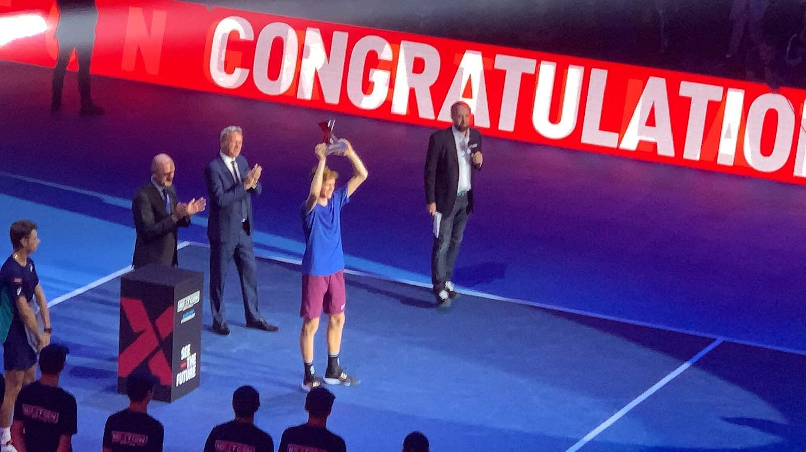

Sports · Tennis
Next Gen ATP Finals 2026
- Dates
- –
- Venue
- PalaCalafiore
- Location
- Reggio Calabria, Italy
- Format
- In-person
- Category
- Tennis
- Industry
- Tennis
- Organiser
- ATP Tour
- Official website
- https://www.nextgenatpfinals.com/
About
Dates are local civil dates for the five-day 20-and-under season finale. Official ATP Tour host announcement and the event's own schedule page fetched 24 Nov 2026.
Topics: Next Gen ATP Finals, ATP Finals, tennis.
No organiser attendance figure found on the official pages fetched 24 Nov 2026 for this upcoming edition. Ranked by our estimated size tier 'medium' (10,000-30,000 attendees/visits), a judgement from format, venue and scale, not an official number.
Sources
- Official — https://www.nextgenatpfinals.com/en/event/tournament-schedule
- Official — https://www.atptour.com/en/news/reggio-calabria-to-host-2026-next-gen-atp-finals
- Official — https://www.atptour.com/en/tournaments/next-gen-atp-finals/7696/overview
- Official website — https://www.nextgenatpfinals.com/